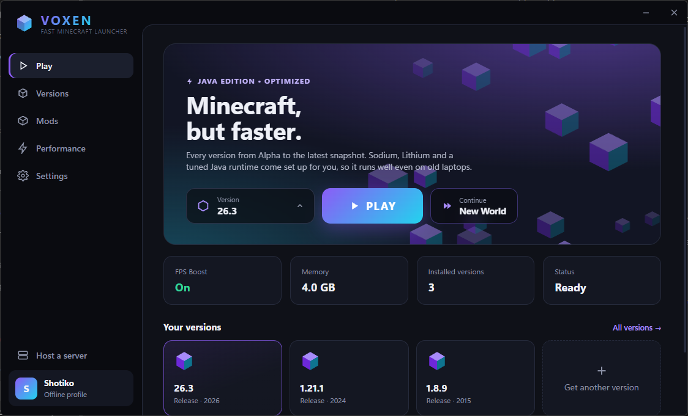
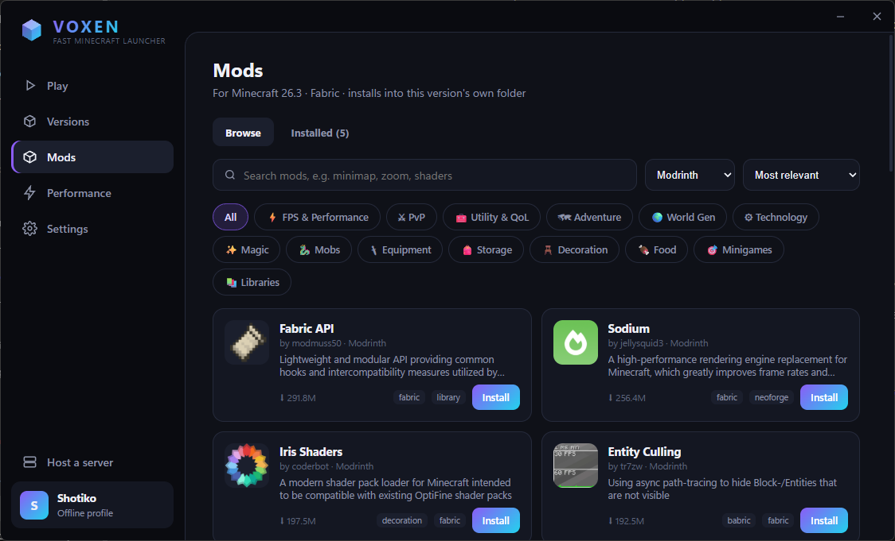
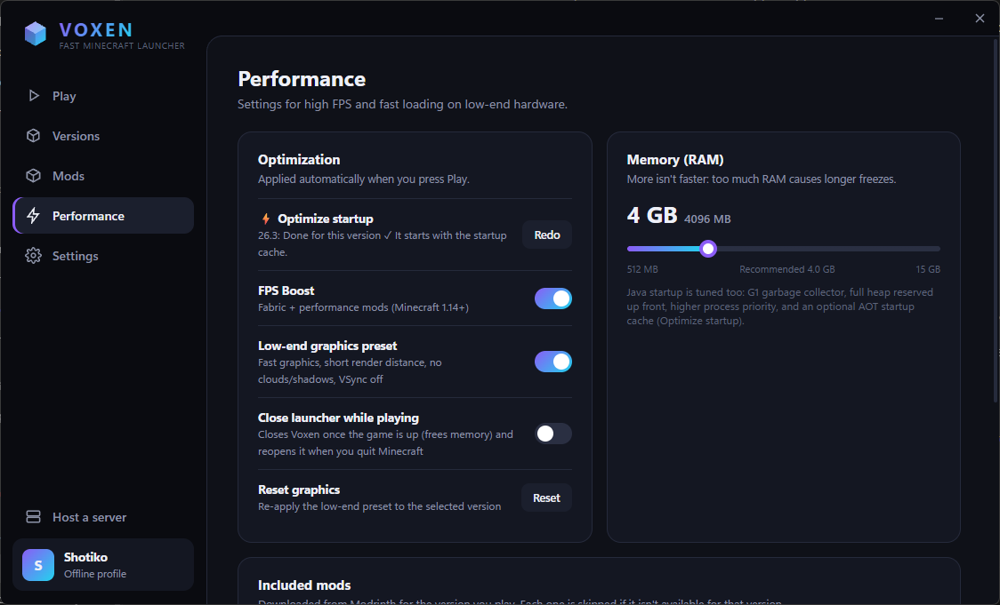
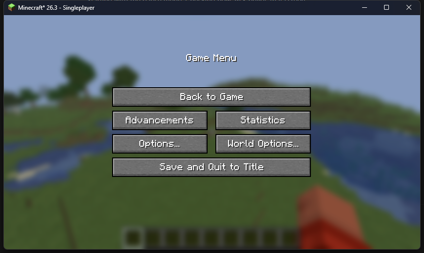
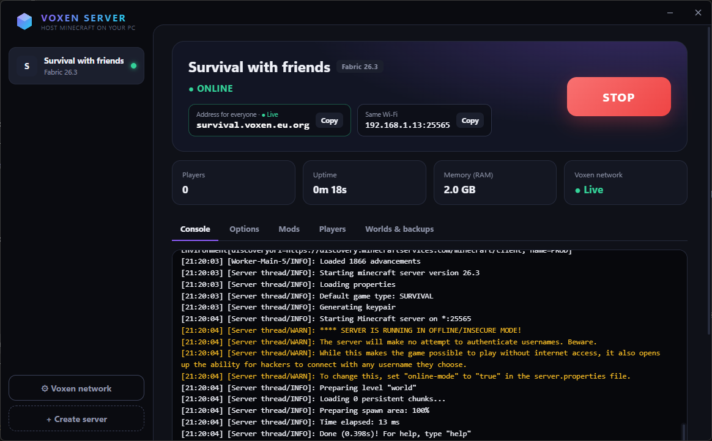

Voxen is a free launcher that runs every Minecraft version with a performance boost built in, and lets you host a server on your own PC that anyone can join.

No mod hunting, no Java installs, no config files. Pick a version and press Play.
Sodium, Lithium, FerriteCore and more install automatically for every version that supports them, with graphics settings tuned for speed.
A lean mod set, a Java startup cache and our own Voxen Boost mod cut the waiting. Minecraft's 2-second logo fade is gone.
Releases, snapshots, beta and alpha. Voxen downloads the right Java (8, 17, 21 or 25) by itself.
Search thousands of mods from Modrinth (and CurseForge). Filter by FPS, PvP, Utility, Adventure and more; dependencies install themselves.
Jump straight back into your last world, skipping the menus. Each version keeps its own worlds and settings.
The pause menu loses the Report Bugs, Feedback and Player Reporting buttons. Just your game.



Create a server, press Start, and send your friends an address like this. No router settings, no VPN, nothing else to switch on.

Run VoxenSetup.exe. It installs in seconds, with no admin rights needed.
Pick any version. Voxen downloads it with the right Java and the FPS Boost mods.
Open Voxen Server, create a server, press Start and share its address.
The launcher and Voxen Server in one installer. Free, no account needed.
Windows may say “Windows protected your PC” because Voxen is new and not code-signed yet. Click More info → Run anyway.
Yes. The launcher, the server app and the server addresses are free.
No. Voxen downloads the right Java for each Minecraft version from Mojang by itself.
Voxen uses offline profiles (just a name). That works for singleplayer, Voxen servers and servers that allow offline players. Official servers such as Hypixel need a purchased Minecraft account and the official launcher. Please support the game and buy it.
When you press Start, your PC connects out to the Voxen network, which home routers always allow. Players join your server's name address, and the Voxen network passes their connection through to your PC. Your server still runs on your own computer, so keep Voxen Server open while people play.
Anyone with the address can try to join. Turn on the Whitelist in your server's Options and add your friends in Players. Only they will get in.
Everything lives in %APPDATA%\.voxen. Uninstalling removes the programs but keeps your worlds, versions and servers, so reinstalling or updating never loses anything.